直近1週間の人気フィード
はてなブックマーク数を元に新着優先で並べ替え
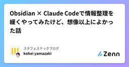
Obsidian × Claude Codeで情報整理を緩くやってみたけど、想像以上によかった話 260
260 スタフェステックブログのフィード
スタフェステックブログのフィード
!この記事は、スターフェスティバル Advent Calendar 2025の11日目です。こんにちは。ここ1ヶ月くらい、Obsidian × Claude Code メインで日々の情報整理に使ってみて、思った以上に自分に合っていると感じたので、そのあたりを書きます。 日々の情報整理を改善しようと思った背景組織横断のプロジェクトと、それ以外の大小さまざまなタスクが日々発生していて、プロジェクトのボードに載せづらいタスクが多かった。メモや Slack の TODO を使ってはいたものの、気づくとタスクと情報が散らばってしまい、目の前のタスクをこなしていたら、使わなくなった。...
3日前
AWS設計ガイドラインを公開しました 187 フューチャー技術ブログ
フューチャー技術ブログ
<img src="/images/2025/20251212a/top.jpg" alt="" width="1024" height="559"><h1 id="はじめに"><a href="#はじめに" class="headerlink"
2日前
クラウドネイティブなデータベースはなぜコンピュートとストレージを分離するのか 104 hacomono TECH BLOG
hacomono TECH BLOG
この記事は hacomono Advent Calendar 2025 の12日目の記事です。 基盤本部で今後のhacomonoのアーキテクチャ設計をしている @bootjp と申します。 今年はマイクロサービス化に向けての社内共通のイベントバスの設計や基盤周りの設計/実装を行っていました。 以前にはこのような記事を書き、分散システムや分散データベース、分散ストレージなどが大好きです。 「Goで作って理解するRaftベースRedis互換KVS」という同人誌も書いています。 もし興味のある方はお手にとってみてください。 はじめに 今回は「クラウドネイティブデータベース」と言われる、昨今のデータベ…
2日前

巨大Ruby on Railsサービスで安全かつ効率的にデッドコードを消す技術
90 freee Developers Hub
freee Developers Hub
この記事は、freee Developers Advent Calendar 2025 の 12日目の記事です。 こんにちは。freeeでエンジニアをしている高田と申します。普段はエンジニア横断組織で共通基盤・社内用共通ライブラリを開発したり、プロダクトの開発支援などを行っています。趣味はお散歩です。 今回は、サービス開始から丸12年が経過して複雑になったRuby on Rails製サービスで、安全かつ効率的にデッドコードを消せるようにするために行ったことをお話します。 3行サマリ デッドコードを検出するためにcoverband gemを入れようとしたものの、入れたいサービスの規模が大きすぎて…
2日前
バリデーションとパースの分離。Goで実装する「変更に強い」CSV 処理の設計 154 カミナシ エンジニアブログ
カミナシ エンジニアブログ
こんにちは。カミナシで「カミナシ 従業員」の開発を行っている nilpoona です。 業務アプリケーションを作っていると、避けて通れないのが CSV インポート機能 です。 最初は「encoding/csv で読んでループ回せば実装できる」と考えて作り始めるのですが、仕様が複雑になるにつれて、以下のような課題に直面することがあります。 バリデーションとパース処理が混在し、エラーの発生箇所が追いづらい。 「文字コードが Shift_JIS だった」など多様なエンコーディングへの対応で、ビジネスロジックが複雑になる。 パースやバリデーションエラーを即座にリターンしてしまうと、ユーザーは一つのエラ…
3日前
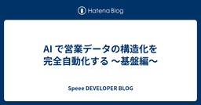
AI で営業データの構造化を完全自動化する 〜基盤編〜 44 Speee DEVELOPER BLOG
Speee DEVELOPER BLOG
本記事は Speee Advent Calendar 2025 13日目の記事です。 昨日の記事はこちら はじめに こんにちは、Speee リフォームDX事業本部でテックリードをしている黒須です。 昨日は同プロジェクトの PdM である嶋さんが「AIで営業データの構造化を完全自動化する 〜プロンプトチューニング編〜」を公開しました。 嶋さんの記事では、泥臭いプロンプトチューニングについて語られています。 対して基盤編である本記事では、その裏側でエンジニアがどのようにリアルタイム処理のパイプラインを構築し、API コストやレスポンス速度の課題を解決したかについてお話しします。 目指す水準: 通話…
13時間前

俺が一番好きなデザインパターン「Strategy Pattern」の話 207 株式会社ZOZOのフィード
!🎄 本記事は ZOZO Advent Calendar 2025 シリーズ 8 の 11 日目です。ぜひ他の記事もご覧ください。 はじめにこんにちは。データシステム部・推薦基盤ブロックのかみけん（上國料）です。突然ですが、デザインパターンの中で個人的に一番好きなのは Strategy Pattern です。学生時代、研究で鬼のように使っていました。機械学習の研究では「複数のモデルを同じ条件で比較する」場面が頻繁にあって、モデル A とモデル B、さらに提案手法 C を差し替えながら実験を回すわけです。このとき、各モデルを Strategy として切り出しておくと、実験コ...
3日前
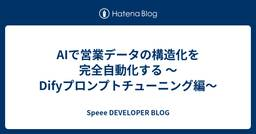
AIで営業データの構造化を完全自動化する 〜Difyプロンプトチューニング編〜 52 Speee DEVELOPER BLOG
※この記事は、2025 Speee Advent Calendar 12日目の記事です。 昨日の記事はこちら tech.speee.jp こんにちは、Speee リフォームDX事業本部 プロダクトマネージャーの嶋です。 以前書いた記事、組織全体の開発スループットを劇的に向上させた「AIプランナー」とは？ でも触れたように、私たちは現在、AIを前提にバリューチェーンを再創造する「AX（AI Transformation）」に取り組んでいます。 その最終的な到達点の一つとして掲げているのが「接客の完全AI化」です。 今回はその第一歩として、外壁塗装の会社探しサイト「ヌリカエ」における 「電話営業デ…
2日前
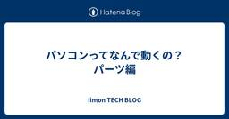
パソコンってなんで動くの？パーツ編 23 iimon TECH BLOG
iimon TECH BLOG
はじめに 主要パーツの名称 ハードウェアとソフトウェアの違い 主要パーツの役割 トータルバランス ボトルネック現象とは？ ボトルネック回避のために 適切なバランスはどうやって調べればいいの？ まとめ 参考資料 はじめに こんにちは！株式会社iimonでエンジニアをしている新卒の今井です！ 本記事は iimonアドベントカレンダー13日目の記事です！ 眠れない夜は宇宙とか深海とか、未知なものについて考えるんですけど、ある晩ふとパソコンってなんで動くんだろうって考え始めていつの間にか入眠しました。 人の作ったものなら知識がなくても見当くらいはつくだろうと見積もっていましたがそんなことはなく...。…
1日前
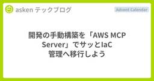
開発の手動構築を「AWS MCP Server」でサッとIaC 管理へ移行しよう 63 asken テックブログ
asken テックブログ
はじめに こんにちは。インフラエンジニアの鈴木です。 この記事は、株式会社asken (あすけん) Advent Calendar 2025の12/12の記事です。 今回は「開発の手動構築を、AWS MCP ServerでサッとIaC管理へ移行する」方法を紹介します。 （ここでのIaC管理とは、インフラの構築や設定を手作業ではなくコードで自動化・管理することを指します。） スピードが求められる場面では、まず開発環境を手動で素早く構築することがあります。 しかし、ステージングや本番へ進める段階で、既存リソースの棚卸しや依存関係の把握、IaC化に時間がかかり停滞しやすいのが課題です。 この問題を解…
2日前
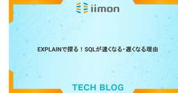
EXPLAINで探る！SQLが速くなる・遅くなる理由 61 iimon TECH BLOG
はじめに 前提 EXPLAIN（実行計画)とは EXPLAINを使ってみる EXPLAIN の主なフィールドを見てみよーー インデックスありと無しのEXPLAINを比較してみた ▼ インデックス無しで検索した場合の EXPLAIN ▼ インデックスありで検索した場合の EXPLAIN カバリングインデックス実践編 カバリングインデックスとは ▼ idによるクラスター化インデックス ▼ nameによる非クラスタ化インデックス ▼ ルックアップが必要となる事例 ▼ 複合インデックスを検討してみる まとめ 参考 最後に はじめに 本記事はiimon Advent Calendar 2025 11日目…
3日前

Webサイトを作るように紙パックを企画したら300万本売れるヒット作になった話 ～UX視点で見る『ミルクの束縛』～ 258 KAYAC Engineers' Blog
KAYAC Engineers' Blog
束縛束縛本記事は、面白法人グループ Advent Calendar 2025 の9日目の記事です。束縛束縛 こんにちは。面白法人カヤックでディレクターをしている合田ピエール陽太郎です。 www.kayac.com束縛束縛束縛束縛束縛束縛束縛束縛束縛束縛束縛束縛束縛束縛束縛束縛束縛 みなさんは、『ミルクの束縛』という飲み物をご存知でしょうか？「名前、激強でわらった」「パッケージのインパクトすごい」とSNSでも話題にしていただいているパッケージ、実は普段Web制作をしているカヤックが、Webページを制作する考え方でディレクションしました。今日は、その裏側をお話しします！ ミルクの束縛ミルクコーヒー…
4日前
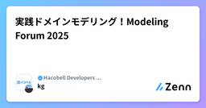
実践ドメインモデリング！Modeling Forum 2025 31 Hacobell Developers Blogのフィード
こんにちは！ハコベル開発チームの古賀です。「Hacobell Developers Advent Calendar」12日目の記事を担当します。先日、Modeling Forum 2025 で開催されたドメインモデリングワークショップに参加してきました。ドメイン駆動設計のモデリングをいちから体感する内容だったのですが、非常に学びが多かったのでその内容を紹介します。https://umtp-japan.org/event-seminar/mf2025/76609 ワークショップの概要ドメイン駆動設計の基本コンセプトの一つである「モデル駆動設計」の考え方とやり方を手を動かしなが...
2日前
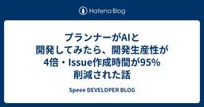
プランナーがAIと開発してみたら、開発生産性が4倍・Issue作成時間が95%削減された話 42 Speee DEVELOPER BLOG
※この記事は、2025 Speee Advent Calendar11日目の記事です。 昨日の記事はこちら こんにちは、Speeeでプランナーとしてプロダクト開発に携わっている石川澄怜です。 Speeeには新卒で入社し、今年で3年目になります。大学時代は、中世日本文学における「地獄」についてひたすら研究していました。 現在は、リフォーム検討ユーザー様とリフォーム会社様をおつなぎするマッチングサービス 「リフォスム」 のプロダクト開発を担当しています。 はじめに：プランナーによるAI開発を検討しはじめたきっかけ まずは「小さな Issue を AI と一緒に実装してみる」から始めた Git の初…
3日前

sudoをパスワードレス認証で使いたい 183 IIJ Engineers Blog
IIJ Engineers Blog
【IIJ 2025 TECHアドベントカレンダー 12/9の記事です】 昨年は「SSHでも二要素認証を使いたい」のタイトルでご紹介したSSHで二要素認証を利用する方法が好評だったので、今年はsudoを...
5日前

ランサムウェア対策としてのバックアップ戦略＠AWS 177
NTT DATA TECHのフィード
この記事はJapan AWS Top Engineers Advent Calendar 2025のDay9 の記事です。https://qiita.com/advent-calendar/2025/aws-top-engineers 対象読者Amazon Web Services（AWS）でバックアップ戦略を検討している方ランサムウェア対策としてのバックアップ設計を検討している方AWS Backupの論理的エアギャップボールト（Logically Air-Gapped Vault）に興味がある方マルチアカウント構成でのバックアップ管理を検討している方...
5日前

Rails アップグレードを安全に進めるための実践ガイド 35 ANDPAD Tech Blog
ANDPAD Tech Blog
こんにちは、ザックです。フリーランスの Rails 開発者として、過去 2.5 年間アンドパッドで働いています。 アンドパッドでは、主にモノリシックアプリケーションの Rails アップグレードを担当しています。 Rails のアップグレードは、破壊的変更の早期検知、保守性の維持、将来的なコスト削減のために欠かせません。 古い挙動や monkey-patch を抱えたまま放置すると、アップグレードの難易度とリスクは急速に上がります。 そのためアンドパッドでは、変更を小さく保ち、安全に進めるためのアップグレードプロセスを運用しています。 このポストでは、その手順と考え方を紹介します。 Rails…
3日前
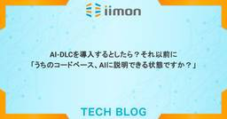
AI-DLCを導入するとしたら？それ以前に「うちのコードベース、AIに説明できる状態ですか？」 28 iimon TECH BLOG
はじめに AI-DLCとは なんの略称やねん AI-Driven Development Lifecycleの概念 開始( Inception )フェーズ 構築( Construction )フェーズ 運用( Operation )フェーズ スプリントでは遅い！？ボルトという単位 AI-DLC実践事例 そもそもこの記事を書こうと思った理由 事例1：CyberAgent社 - 既存フローへの統合 事例2：カカクコム社 - ワークショップで得た学び 開発効率1.x倍の壁 AIに対するマイクロマネジメント そろばんから電卓になっただけでは足りない！ 各フェーズの中でもステップごとに成果物を残す 設計…
2日前

Devinを食べログの組織内に広めるためにやったことと、その学び 28 Tabelog Tech Blog
Tabelog Tech Blog
この記事は 食べログアドベントカレンダー2025 の12日目の記事です🎅🎄 先日以下の記事を書きました、食べログカンパニー 開発本部 飲食店プロダクト開発部 羽澤と申します。 この記事の中で、"現在では Devin や Claude Code も導入されており" と書いたのですが、実はDevinの導入に深く関わっていました。その中で、涙なしでは語れない出来事や、それを起因とした意識と行動の変化や学びがありましたので、アドベントカレンダーという場を借りて語ります。ぜひ読んでください。 序章：Devinとの出会い 4月のある日、企画から新しい案件の打診を受けておりました。 これはすでにリリース済み…
2日前
【アドベントカレンダー2025】AI Agentの「自律性」との向き合い方 21 ぐるなびをちょっと良くするエンジニアブログ
ぐるなびをちょっと良くするエンジニアブログ
はじめに こんにちは。データサイエンティストの閔（みん）です。普段はAIレストラン検索アプリ「UMAME!」の開発に携わるほか、社内のデータ管理、AIを用いた業務改善などに関わっています。 本記事では、今年1年間、AIの話題として最もホットだったであろう AI Agent（以降Agentとする）を触ったり、作ってみたりしながら感じた、Agentの「自律性」との向き合い方について話します。Agentについては、過去の記事をご参照ください。 Vertex AI Agent Engine Memory Bankを使ってみた - ぐるなびをちょっと良くするエンジニアブログ AIレストラン検索アプリ『U…
3日前

Terraformによるバッチ定義の定型作業をLLMエージェントで効率化する試み 12 Nealle Developer's Blog
Nealle Developer's Blog
こんにちは！ニーリーで SRE をしています 高 (@nogtk) です。 ニーリーでも LLM を活用した業務や開発効率の改善が日々あちこちで行われているのですが、そんな事例の1つをご紹介できればと思います。 この記事は ニーリーアドベントカレンダー 12日目です 🎉 バッチの定義方法について ニーリーでは、スケジュール実行されるバッチ処理の実行基盤として Step Functions を利用し、Step Functions から ECS タスクを呼び出す形を取っています。 そしてその sfn や ECS タスクは Terraform でコード化（IaC）されており、SRE チームによってそ…
2日前
Storybook風SlackApp UIのプレビューツール『slack-blockbook』を作ってみた！ 20 LayerXのフィード
LayerX Tech Advent Calendar 2025の11日目の記事です。バクラク事業部 でバクラク勤怠を作っているソフトウェアエンジニアの @tiger です。今日はSlack Block KitのStorybook風プレビューツール slack-blockbook を作成したので紹介させてください！https://www.npmjs.com/package/@layerx/slack-blockbook 想定読者SlackAppを開発している（または興味がある）エンジニアjsx-slackを使っている開発者 前提：私たちの技術スタック私が属して...
3日前
社内クラウドデザインパターン勉強会レポート 39 asken テックブログ
はじめに こんにちは。バックエンドエンジニアの齋藤です。 今回は、社内のCo-Learning委員会主催で2025年上期に行われた「クラウドデザインパターン勉強会」の内容をご紹介します。私は参加した側なので、参加者目線で紹介したいと思います。 この記事は、株式会社asken (あすけん) Advent Calendar 2025の12/11の記事です。 勉強会の背景 クラウドサービスを効果的に活用したシステムを構築するためには、設計段階での適切なアーキテクチャの判断が不可欠です。この勉強会では、クラウドデザインパターン（CDP）を学ぶことで、以下のようなスキル向上を目指しました。 クラウド特有…
3日前
AIエディタEDENが拓く技術ブログ執筆の効率化 38 Blog on DeNA Engineering
Blog on DeNA Engineering
DeNA Engineering Blog をご覧の皆様、こんにちは。本記事では、2025年度新卒研修で開発されたプロダクトの一つである、社内における技術ブログ執筆を支援する AIエディタ「EDEN」 についてご紹介します。DeNAでは、社内に眠る貴重な技術的知見を広く発信し、エンジニアリングコミュニティに貢献することを重要視しています。EDENは、このミッションを強力に推進するため、執筆ハードルの低減とプロセスの効率化を通じて、より多くの技術的挑戦と学びが共有される世界を目指して開発されました。
3日前
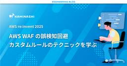
【re:invent 2025】AWS WAF の誤検知回避 - カスタムルールのテクニックを学ぶ (NET-301参加レポート)
38 カミナシ エンジニアブログ
カミナシでソフトウェアエンジニアをしているいちび(@itiB_S144)です。 12月1日から12月5日にかけて開催されていたAWS re:invent に参加してきました！日本に帰ってきて時差ボケもだいぶ治ってきました。 最終日に参加した以下のセッションについてレポートします。 NET301 Hands-on AWS WAF: Troubleshooting attack scenarios セッション詳細として記載されていた内容は以下です。 Suspicious of an activity spike? Seeing odd traffic patterns? Introduced a …
3日前

ソフトウェアの成分表示？SBOM管理の課題とSSVC・AIを用いたベストプラクティス 19 NTT docomo Business Engineers' Blog
NTT docomo Business Engineers' Blog
SBOM（Software Bill of Materials）とは、ソフトウェアに含まれるコンポーネントの一覧表であり、近年の法統制によりその管理が求められています。本記事では、SBOM管理の必要性と現状の認知度についてお話しします。また、SSVCによる脆弱性評価とAIを活用した、効率的なSBOM管理のベストプラクティスについて解説いたします。 はじめに SBOM（Software Bill of Materials）とは SBOMの認知度 SBOM法統制とガイドライン SBOM管理の法統制が進む背景 OSS（オープンソースソフトウェア）の急速な普及 発見される脆弱性の爆発的な増加 現状考え…
2日前

入社2ヶ月の「ドメインダイブ」。現場のリアルを捉え、事業価値を最大化するシステム戦略を描く 19 Nealle Developer's Blog
こんにちは！ ニーリーアドベントカレンダー11日目を担当するPDBiz開発グループの古庄(@k_furusho)です。 私は10月16日にニーリーへ入社し、「PDBiz（Park Direct for Business）」開発グループにジョインしました。 このPDBiz、社内では主力事業であるPark Directに続く「第二の矢」として、強烈な事業成長が期待されているフェーズにあります。 note.nealle.com 今回は、入社から短期間で「法人車両の月極駐車場管理」というドメイン業務の解像度を一気に高め、システム戦略を描くために実践したアプローチについてお話しします。 コードの外側に広…
3日前
話す人より、聞ける人がプロダクトを動かす 18 ROXX開発者ブログ
ROXX開発者ブログ
はじめに あなたは誰？ 「いかり」と言います。ROXXの中でエンゲージスクワッドという組織のプロダクトオーナーをしています。ねこが好きです。 エンゲージスクワッドとは？ 開発（エンジニア/デザイナー）だけではなく、マーケターも所属している団体です。場合によってはセールスの方が所属することもあります。 この記事は誰に読んで欲しい？ 内容は技術的なものではなく心構えの要素がほとんどですので、主にプロダクトオーナーやプロダクトマネージャーではありますが、プロダクト開発に携わる遍く人々に読んでもらえたら嬉しいと考えています。 聞いて動かす プロダクト開発において、最も難しいことは「正しい判断をすること…
3日前
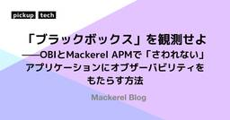
「ブラックボックス」を観測せよ——OBIとMackerel APMで「さわれない」アプリケーションにオブザーバビリティをもたらす方法 10 Mackerel ブログ #mackerelio
Mackerel ブログ #mackerelio
レガシーシステムやバイナリ化されたアプリケーションなど、「コードにさわれない」ブラックボックスな環境に、OBI（OpenTelemetry eBPF Instrumentation）を使ってゼロコードでオブザーバビリティをもたらす方法を紹介します。Mackerel APMにトレースデータを統合し、言語を問わず、フロントエンドからデータベースまでシームレスに処理を追跡する手順と、その利点を解説します。
1日前
自社開発プロダクト【Voiceek】開発で見えたデザイナーとのうまい連携のしかた 10 Insight Edge Tech Blog
Insight Edge Tech Blog
この記事は、Insight Edge Advent Calendar 2025の12日目の記事です！ はじめに こんにちは、Insight Edgeでエンジニアをしている東です。 この記事では、自社プロダクト Voiceek の開発を題材に、「エンジニアとデザイナーがどうやってうまく協力しているか」を紹介します。 Voiceek（ボイシーク）とは、顧客の声・従業員の声の分析を効率化・高度化できるテキスト分析ツールです。 以前には、UI/UXデザイナー視点の記事 もあるので、そちらもぜひご覧ください。 普段からフロントエンドやプロダクト開発をしていると、 デザインの意図が読み切れない 動きや細か…
2日前
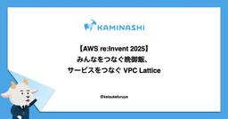
【AWS re:Invent 2025】みんなをつなぐ晩御飯、サービスをつなぐ VPC Lattice 17 カミナシ エンジニアブログ
こんにちは、「カミナシ レポート」の開発に携わっている furuya です。 re:Invent2025 の参加レポート第二弾です。前回に引き続き現地レポートとセッションレポートをお送りします。 現地レポート：食べ物 ラスベガスでの夕食 前回、朝ごはんやランチ、おやつはカンファレンス内で提供される、というのを書きました。夕食はどうでしょう。毎日各所でAWS含むいろんな会社さんやグループがパーティを開いており、事前に申し込んでいればネットワーキングと会食を楽しむことができます。そういうのがない日はカミナシメンバーみんなでご飯にいきました。 美味しかったチキンバーガー。ポテトも美味しかったけど油が…
2日前
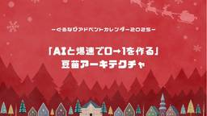
【アドベントカレンダー2025】「AIと爆速で0→1を作る」 豆苗アーキテクチャ 33 ぐるなびをちょっと良くするエンジニアブログ
こんにちは。ソフトウェアエンジニアの吉村と申します。 会社ではUMAME!の開発を行っています。バックエンドからキャリアを始めていますが、モバイル、ウェブフロントエンド、クラウドインフラ、AIエージェントなど、なんでも設計/実装します。アドベントカレンダーの10日目はAI時代におけるソフトウェアアーキテクチャとの向き合い方について思考実験的な話をさせていただければと思います。どうかお手柔らかにお願いします。
4日前
LINE iOS におけるアプリ内通知の OS 標準化 16LINEヤフー Tech Blog (LY Corporation Tech Blog
こんにちは。iOS エンジニアのもとにしです。iOS 版 LINE のバージョン 15.14.0 において、アプリ内通知をシステム通知で表示するようアップデートしました。変更前変更後このように、これま...
3日前

ETL差分転送の落とし穴 - Django ORM利用時の注意点と対策
31 Nealle Developer's Blog
この記事は ニーリーアドベントカレンダー10日目です。 こんにちは！Analyticsチームの上田です。 データ分析基盤を運用していると、「データの鮮度を上げたい」「転送コストを下げたい」という欲求は尽きないものです。ちょうど私たちもETLの改善に取り組んでいたのですが、そこには思わぬ落とし穴が潜んでいました。。🥲 今年の反省は今年のうちにということで、得た学びを共有したいと思います！🙏 3行まとめ データ転送コスト削減のため転送方式を 全件洗替え転送 → 差分転送 に切り替えたところ、転送漏れが発生 原因は、Django ORMのsave(update_fields=...) 利用時に、更新…
4日前
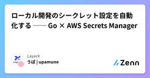
ローカル開発のシークレット設定を自動化する ── Go × AWS Secrets Manager 65 LayerXのフィード
LayerX Tech Advent Calendar 2025の9日目の記事です。バクラク事業部 ソフトウェアエンジニアの @upamune です。今日は、ローカル開発のシークレット設定をいい感じにした話をします。 ローカル開発環境のシークレット設定、手動でやっていませんか？「シークレットは1Passwordにあるので設定してください」開発環境のセットアップでこのようなことを言った・聞いたことがある人も多いのではないでしょうか。APIキーなど、ローカル開発でシークレットの設定が必要なことがあります。この記事では、AWS Secrets Manager と Go の s...
4日前

「私たちのログ配送、コストかかりすぎ？」fluentdのログ配送に関するコスト削減に取り組んだお話 98 freee Developers Hub
はじめに こんにちは！freee のPlatform Engineerをやっているyamaです。 私の所属するCloudGovernance（CGov）チームでは主にAWS関連の権限やコストの統制・可視化・最適化などを行っています。 私は主にコスト統制をメインに担当しています。 この記事はfreee Advent Calendar 2025の7日目になります！ 今回はfreeeにおけるコスト最適化において大きな成果のあった、「fluentdのログ配送に関するコスト削減」についてご紹介いたします。 背景 CGovチームではAWSのコスト可視化・最適化を進めており、AWSのコストを定期的に確認して…
7日前
ノーコードでもここまでできる！ 10分で完成するCopilot Studioデータ分析エージェント 26 Insight Edge Tech Blog
この記事は Insight Edge Advent Calendar 2025 の10日目です。 こんにちは、Insight Edgeの齊藤です。 生成AIサービスの進化は著しいものがあります。「会話しながらアプリを作る」「文章で要件を書くだけで構造を提案してくれる」といった体験が、いよいよ現実の選択肢になってきました。 私自身は普段エンジニアとしてコードを書いていますが、「ノーコード／ローコードでどこまで実現できるのか」「どの領域からは従来どおりコードを書いた方がよいのか」を見極めることが、技術の目利きや自身の価値の把握、さらにはキャリアを考えるうえでも重要だと感じています。 そこで今回は、…
4日前
スクラムマスターとしてのファシリテーションスキルをAIで爆上げするテクニック 96 カミナシ エンジニアブログ
おはようございます。カミナシでシニアマネージャーを担当している daipresents です。 ついにクロール25mで娘に負けそうになってきました。子どもの成長はやすぎですね。 自分の部署にはもうひとりエンジニアマネージャ（EM）がいるのですが、おたがいに1on1やファシリテーションでチームにかかわることが多いため、「お互いにスキルアップを目指そう！」と話しています。 年末なので「特訓は来年がんばろう」と意見が一致しているのですが、年内はAIを使って自分たちのファシリテーションスキルを高める方法を試しています。 自分のファシリテーションをAIに評価してもらおう 1on1の場合、自分のスキルを手…
6日前
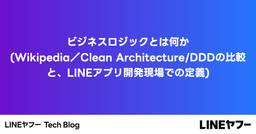
ビジネスロジックとは何か（Wikipedia／Clean Architecture／DDD の比較と、LINE アプリ開発現場での定義） 13LINEヤフー Tech Blog (LY Corporation Tech Blog
LINE アプリのアーキテクチャの統一を推進するプロジェクトをリードしている Hiraki と申します。アーキテクチャの議論をするうえで、ビジネスロジックという言葉はカジュアルに使われますが、人によっ...
3日前
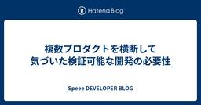
複数プロダクトを横断して気づいた検証可能な開発の必要性 25 Speee DEVELOPER BLOG
※この記事は、2025 Speee Advent Calendar10日目の記事です。 昨日の記事はこちら はじめに 不動産事業部でtoB向けプロダクト群「ツナガル」を開発している篠島（24新卒）です。ツナガルでは、査定書作成SaaSや架電代行BPOサービスなど、不動産会社の業務効率化を支える複数プロダクトを提供しています。これらのプロダクトを横断的に運用保守・改善しながら、新規プロダクトの立ち上げにも並行して取り組む。そんな複雑でおもしろい環境が、今の開発チームの特徴です。 新卒入社から1年9ヶ月。去年のAdvent Calendarでは「プロジェクトをメンバーとしてどう進めるか」というテー…
4日前
「その処理、本当に並列ですか？」Node.js, Python, Ruby, Goで踏み抜くCPUバウンドの罠 90 Hacobell Developers Blogのフィード
この記事は「Hacobell Developers Advent Calendar」ー 8日目の記事です。 はじめに「あの言語の並行処理って、結局どう動くんだっけ？」日々の開発業務に追われる中で、ふと立ち止まってしまうことはありませんか？現代のアプリケーション開発において、マルチコアCPUの性能を最大限に引き出し、ユーザーに快適なレスポンスを返すために並行処理の理解は不可欠です。しかし、使用する言語によって、そのアプローチや内部的な挙動は驚くほど異なります。本記事では、Node.js, Python, Ruby, Goをピックアップし、それぞれの並行処理モデルが「CPUバウン...
6日前
【アドベントカレンダー2025】ほんとにできてる？New Relic Alertの通知 7 ぐるなびをちょっと良くするエンジニアブログ
こんにちは。開発部の江島です。 普段はコンテナ基盤の運用やサービスの品質向上に向けたSRE活動などの業務を行っています。 New RelicのAlert機能は、システムの異常を検知し、即座にPagerDutyやSlackなどの外部ツールに通知を送るために非常に便利なツールです。 しかし、デフォルトの設定のままでは、重要なアラートを見逃してしまう可能性があることをご存知でしょうか？ 本記事では、New Relicでアラートを設定する際に見落とされがちな2つの問題点と、それらに対する具体的な対策手順を解説します。
2日前
React Router v7を使ったルーティングを体験してみた 22 iimon TECH BLOG
■はじめに ■環境 ■React Routerのインストール ■基本的なルーティングの定義 ◆コンポーネント ■ネストルーティングの定義 ◆パスを完全指定した場合のルーティング ◆ネストルーティングと< Outlet >を使った共通レイアウトの維持 ■ルーティング定義の分割 ■URLパラメータの活用 ■クエリパラメータの活用 ■stateを使ったページ間のデータ受け渡し ■JavaScriptでのページ遷移 ■まとめ ■最後に ■はじめに こんにちは！ ｉｉｍｏｎでエンジニアをしています「しらみず」です。 本記事はiimon Advent Calendar 2025１０日目の記事となります！ …
4日前
【みんなでやる】"Vibe Coding"から"自力コーディング"まで。みんなでやってみたチームビルディング 4 Insight Edge Tech Blog
この記事はInsight Edge Advent Calendar 2025の13日目の記事です！ 自社初のアドベントカレンダーもいよいよ中間地点ということで、後半戦もどんな記事が出てくるのか楽しみにしています！ はじめに こんにちは！エンジニアリングマネージャーの筒井です。 Insight Edgeにはアジャイル開発チームの中に2つのサブチームがあり、その1つでチームリーダーをしています。 サブチームではコミュニケーションや知見共有などを目的として、週次の定例会を設けていますが、特にエンジニアはリモートワークの利用率が高いこともあり、月に1回を目安にこの定例会を対面で実施することにしました。…
15時間前

AIを「メンター」にしたQAチームの変革：セルフレビューの質を劇的に向上させたContext Engineering 46 Tabelog Tech Blog
この記事は 食べログアドベントカレンダー2025 の10日目の記事です🎅🎄 はじめに こんにちは。食べログ開発本部 QA職域リーダーの池田です。 私は現在、飲食店向けのモバイルオーダーシステム「食べログオーダー」のQA業務を担当しています。プロダクトの規模拡大と社内全体のAI活用推進により開発プロセスが高速化する中、私たちQAチームには、高い品質を維持しながらスピーディに案件を回すことが求められています。 現状、毎月平均20件以上の案件をリリースしていますが、私たちは「テスト観点の品質が、少数のリーダーの経験則に依存してしまっている」という課題に直面していました。 QA業務において、仕様書には…
4日前
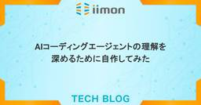
AIコーディングエージェントの理解を深めるために自作してみた 45 iimon TECH BLOG
こんにちは！iimonでCTOをしているもりごです。 本記事はiimon Advent Calendar 2025９日目の記事となります！ 最近ではClaude Code、Cursor、CodexなどAIコーディングエージェントを使用してコードを書くことが当たり前の様になっています。 こういったAIコーディングエージェントがどの様に動いているのか中身を知らずに使うよりも、仕組みを理解して使った方がうまく使えるのではないかという事で最小限の機能で実際に作ってみました。 今回コマンドラインツールを（個人的に）実装しやすいGo言語で作成してみました。 全体像 まず、AIコーディングエージェントを作る…
5日前
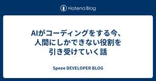
AIがコーディングをする今、人間にしかできない役割を引き受けていく話 43 Speee DEVELOPER BLOG
はじめに ※この記事は、2025 Speee Advent Calendar9日目の記事です。昨日の記事はこちら こんにちは！Speeeでイエウールという自社サービスのWebサービスの開発をしている、木俣と申します。周囲からはきまっちゃんと呼ばれています！ 私は2023年にSpeeeに入社しました。当時、エンジニアとして「課題を特定し解決まで導く力」が自分に足りないと感じ、それを身につけられる環境を求めて入社しました 。 そこから3年目になり、生成AIの普及によってコーディング速度は格段に上がりました 。しかし、それ以上にユーザーのニーズや事業環境の変化も激しくなっています 。 現在のイエウー…
5日前

新卒2年目でインバウンド向け新規アプリ開発に携わった話 - 立ち上げからリリースまで 18 Tabelog Tech Blog
この記事は 食べログアドベントカレンダー2025 の11日目の記事です🎅🎄 こんにちは、食べログカンパニー 開発本部 インバウンド事業開発部所属の林です。昨年カカクコムに新卒入社し、今年で2年目を迎えました。 本記事では、インバウンド向け食べログアプリの新規開発プロジェクトについて、筆者の目線から経験談をお伝えします。実際のプロジェクトの進め方、苦労した点、学びになった点など、具体的なエピソードを交えながらお話しします。 目次 インバウンドアプリ開発の経緯 開発の流れ 開発序盤 開発中盤 デザイナー・企画担当者とのコミュニケーション チャレンジを助けてくれたAI 開発終盤 写真詳細画面でハマっ…
3日前
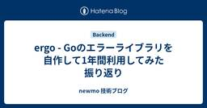
ergo - Goのエラーライブラリを自作して1年間利用してみた振り返り 66 newmo 技術ブログ
newmo 技術ブログ
はじめに Goのエラー処理 Goのエラー処理に何かライブラリを利用していますか？ この質問はGo 1.0のリリースから10年以上経つ今でも、日本のGoコミュニティでよくされる質問です。筆者（tenntenn）もよく他社の方からされます。 pkg/errorsやgolang.org/x/xerrorsがデファクトスタンダードだった頃と比べ、近年（2025年）はあまりデファクトスタンダードと呼べるライブラリが無いのが現状です。 また、言語仕様やerrorsパッケージについても徐々にアップデートされてきました。Go 1.13でエラーのラップやerrors.Is、errors.Asがリリースされ、pk…
7日前

「君らはAIネイティブ世代だから」と背中を押された新卒が、AIモブプロでチームのAI活用の促進に取り組んだ話 8 freee Developers Hub
この記事は、freee Developers Advent Calendar 2025 の 11日目の記事です。 はじめに こんにちは！freee人事労務アウトソースのチームでエンジニアをしている25卒のatoringoです！ みなさんのチームでは、生成AIを開発にどれくらい活用できていますか？ 日々、試行錯誤されていると思います。 私の所属するチームは事業統合で弊社にジョインしたプロダクトで、技術スタックや開発フローなどで弊社の標準と違う箇所が多く、AI活用は進んでいるとは言えない状況でした。 今日は、配属直後の私が「AIモブプロ会」を主催し、そこから「週2時間のAI探索タイム」という制度が…
2日前
AIスパコン「さくらONE」で挑むLLM・HPCベンチマーク (2) MLPerf GPT-3 175B事前学習性能検証 8 さくらのナレッジ
さくらのナレッジ
さくらインターネット研究所の坪内(@yuuk1t)です。 本連載では、AIスパコン「さくらONE」で実施した各種ベンチマーク結果をご紹介しています。前回の第1回の記事では、MLPerfベンチマークの概要と、さくらONEに […]
3日前
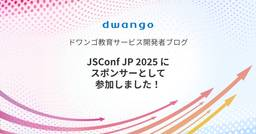
JSConf JP 2025 にスポンサーとして参加しました！ 8 ドワンゴ教育サービス開発者ブログ
ドワンゴ教育サービス開発者ブログ
こんにちは！ 教育事業 Web フロントセクションの佐山です。 2025 年 11 月 16 日に開催された JSConf JP 2025 に参加をしてきました。 ドワンゴはこのイベントのプレミアムスポンサーでした。 本記事ではイベント当日の様子や、弊社のブースや弊社社員の登壇の様子をお伝えしていこうと思います！ セッションの様子 縦書き Web の実用を支える JavaScript speakerdeck.com Web ブラウザにおける縦書きのサポートは CSS を中心に年々進化しており、2024 年にはフォームの縦書き対応が主要ブラウザに揃うなど、その基盤は整いつつあります。しかし、縦書…
3日前

タスク分割と進捗管理：なぜ「ほぼ終わり」が続くのか？ 57
Tabelog Tech Blog
この記事は 食べログアドベントカレンダー2025 の8日目の記事です。🎅🎄。 こんにちは。食べログ開発本部 新規事業開発部 求人チームでユニットリーダーをしている@itayaです。 今回は、エンジニアの業務で誰もが一度は経験するであろうタスクの遅延と進捗管理について、私がチームで取り組んだ改善とそこから見えてきたことをお話しします。 「ほぼ終わってます」が続く経験、ありませんか？ プロジェクトを進めていると、こんな経験はありませんか。 進捗確認：「このタスク、どうですか？」 序盤：「順調です！」 期限当日：「ほぼ終わってます！」 期限翌日：「すみません、まだ終わってないです。〇〇をやる必要があ…
6日前
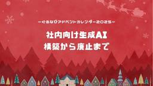
【アドベントカレンダー2025】社内向け生成AI 構築から廃止まで 36 ぐるなびをちょっと良くするエンジニアブログ
受注情報からぐるなびの店舗ページへのデータ連携を開発している有賀です。 「セキュリティとガバナンス確保を目的に社内独自AIチャットを構築」をテーマに生成AIの変化を実感した経験を記載します。
5日前

AIを使って雑にアプリを作る企画の振り返り 36 freee Developers Hub
こんにちは。この記事は freee Developers Advent Calendar 2025 12/09(9日目) の記事です。 adventar.org 今日は請求書チームでエンジニアをしているkochanが書きます。 夏に企画した 真夏の自由研究〜AIを使って雑にアプリを作ろう！〜 - freee Developers Hub の振り返り記事を書こうと思っていたらいつの間にか年末になっていたので、これを機に供養させていただければと思います。 「 真夏の自由研究〜AIを使って雑にアプリを作ろう！」の企画では10日間に渡ってAIを利用して雑なアプリを作らせた経験を連載記事にしました。 こ…
5日前
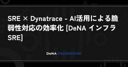
SRE × Dynatrace - AI活用による脆弱性対応の効率化 [DeNA インフラ SRE] 7 Blog on DeNA Engineering
はじめに こんにちは、 IT 本部 IT 基盤部 第三グループの渡邊です。IT 基盤部では、組織横断的に様々なサービスのインフラ運用を行っています。現在、DeNA では AI オールインのスローガンのもと、全社的に AI を活用した生産性の向上に取り組んでいます。1そんな中、IT 基盤部では AI によるインフラ運用の効率化を目指し、AI 機能を駆使したオブザーバビリティに強みを持つプラットフォーム Dynatrace の PoC (Proof of Concept) を進めています。インフラエンジニア / SRE (Site Reliability Engineer) の重要な業務の 1 つに、日々報告される脆弱性の対応があります。この対応は、影響の調査やリスクの評価、関係者との調整など、多くの時間と労力を要する複雑な業務です。
2日前
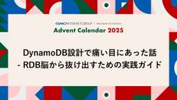
DynamoDB設計で痛い目にあった話 – RDB脳から抜け出すための実践ガイド 7 GMO Developers
GMO Developers
なぜDynamoDBを選んだのか 私たちはハンドメイドECサービス「minne byGMOペパボ」を運営しており、今回リワード広告機能を追加することになりました。ユーザーがアプリ内で広告を閲覧すると、スタンプがもらえる仕 […]
3日前
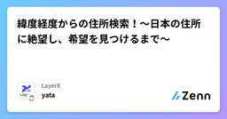
緯度経度からの住所検索！〜日本の住所に絶望し、希望を見つけるまで〜 4 LayerXのフィード
この記事は LayerX Tech Advent Calendar 2025 12 日目の記事です。前回は@tigerさんのslack-blockbookというslack appのUI確認を爆速にするライブラリについての記事でした。こんにちは。株式会社LayerXソフトウェアエンジニアのyataです。皆さん、もちろん緯度経度は好きですよね？今回は、緯度経度と住所を用いた開発に取り組んだ際のお話です。「緯度経度から住所を割り出す」。一見簡単そうに見えるこの要件の中で、日本の住所に絶望し、そこから希望を見つけるまでの物語をお届けします。 やりたかったこと今回実装したの...
1日前

自宅にデジタルサイネージを導入しました 6 SIOS Tech Lab
SIOS Tech Lab
サイオステクノロジー武井です。今回は自宅にデジタルサイネージを導入した話をします。仕事とはまったく関係ないです。 デジタルサイネージとは？ デジタルサイネージとは、電子的な看板のことです。店舗や公共の場で情報を表示するた ...自宅にデジタルサイネージを導入しました first appeared on SIOS Tech Lab.
3日前
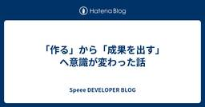
「作る」から「成果を出す」へ意識が変わった話 43 Speee DEVELOPER BLOG
※この記事は、2025 Speee Advent Calendar7日目の記事です。 昨日の記事はこちら こんにちは。24卒エンジニアの木下です。普段はDX事業本部にて、不動産一括査定サービス「イエウール」の開発を担当しています。 イエウールとは、売却を検討しているユーザーと不動産仲介会社をマッチングさせる不動産一括査定サービスです。 この記事では、新卒2年目の私が中規模施策を主導する中で「言われたものを作る」状態だったことで起きた問題と、それを乗り越えるために取ったアクション、そこから得られた学びについてお話しします。 1年目：実装力を磨くことに集中した時期 入社後約一年間は、先輩エンジニア…
7日前
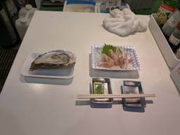
TSKaigi Hokuriku後日談 ~どのようにHTMLを型で表現しているか~ 25 エムスリーテックブログ
エムスリーテックブログ
この記事はエムスリー Advent Calendar 2025 9日目の記事です。 デジスマチームの小島(@jiko_21)です。 TSKaigiの次の日に行った近江町市場での新鮮な牡蠣とのどぐろ。おいしかったです。 今回は自分が趣味で実装しているhtml-typeというプロジェクトにて行っている、HTMLタグの持つルールをTypeScriptの型として表現する方法について紹介します。
5日前

セルフホストDifyアプリケーションにアクセスできるドメインを制限したい 3 KAYAC Engineers' Blog
技術部の小池です。 この記事は面白法人グループ Advent Calendar 2025の12日目の記事です。 AWSでDifyをセルフホストした際のアクセス制限についての取り組みを紹介します。 Difyのセルフホスト版におけるアクセス制限問題 DIfyはノーコードで生成AIアプリケーションを構築できるプラットフォームです。SaaS版とセルフホスト版があり、セルフホスト版ではインフラコストはかかるものの、Dify自体は無料で利用することができます。 セルフホスト版では、メールサーバの設定を未設定にしておくことで事前に招待したユーザのみDifyの画面にアクセスできるよう制限することができます。一…
2日前

Go 1.25 testing/synctestの使い所とは? もう非同期処理を含むテストで悩まない 3 Ubie テックブログのフィード
!この記事は Go Advent Calendar 2025 11日目 と Ubie Tech Advent Calendar 2025 11日目の記事です。すみませんが遅刻してしまいました。こんにちは @glassmonekey です。https://x.com/glassmonekey先日のGo Conference 2025ではencoding/json/v2についてトークをしました。https://gocon.jp/2025/talks/958036/旬な機能繋がりではないですが、今回はGo 1.25で正式に導入されたtesting/synctestについて紹介しま...
2日前

Claude Codeプラグインを社内で作って、2ヶ月経過した 24 Ubie テックブログのフィード
こんにちは、Ubieでソフトウェアエンジニアをしているshirajiです。(ちょっとここ1,2週間年内リリースするものが立て込んでて、なぜ12/9担当になったのか？と後悔してます。残り1時間で12/10です。)この記事は、Ubie Advent Calendar 2025 の12/9の記事です。Claude Codeって便利ですよね。ここ最近compactの頻度が激しくて、ちょっと乗り換えか？って考えていますが、一旦それは置いておいて2025年10月9日に Customize Claude Code with plugins が発表されて「これは会社全体で活用できそう！」と思い、...
4日前
エンジニアの交流促進に最適！アーキテクチャ大喜利のすすめ - チームビルディング事例 10 Insight Edge Tech Blog
この記事は、Insight Edge Advent Calendar 2025の11日目の記事です！！ はじめに こんにちは。アジャイル開発チームでエンジニアリングマネージャーをしている三澤です。本記事では今年実施したチームビルディング施策をご紹介します。 弊社Insight Edgeは、住友商事グループ各社のDXを推進するためにプロジェクト単位でチームを組成するスタイルをとっています。 そのため、「これまで一緒のプロジェクトに入ったことがないメンバーと次のプロジェクトでチームを組む」という状況が発生します。 だからこそ、プロジェクトをまたいでコミュニケーションを取り、互いの思考や技術観を知る…
3日前
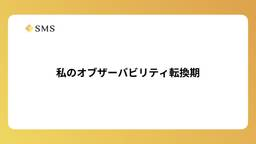
私のオブザーバビリティ転換期 5 エス・エム・エス エンジニア テックブログ
エス・エム・エス エンジニア テックブログ
この記事は株式会社エス・エム・エスAdvent Calendar 2025の12月11日の記事です。 qiita.com こんにちは、介護/障害福祉事業者向け経営支援サービス「カイポケ」のリニューアルプロジェクトでSREを担当 していた 加我 (@TAKA_0411) です。 私事ではありますが、9月にSREチームからプロダクト開発チームへ異動しました。現在はEmbedded SREではなく、開発者としてKotlinを用いたバックエンド開発を主に担当しています。 これまでの私のキャリアはQA → インフラ → SREという流れで、アプリケーション開発の経験はほとんどありませんでした。そのため、…
3日前
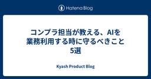
コンプラ担当が教える、AIを業務利用する時に守るべきこと5選 23 Kyash Product Blog
Kyash Product Blog
こんにちは、Kyash コンプライアンスチームの「コンプライアンスの番犬」です。 はじめて Kyash Advent Calendar に投稿します。8日目の記事です。 今回は、エンジニアやPMの方々ではなく、あえて「コンプライアンス担当」の視点から記事を書かせていただきます。 ターゲット読者は、「AIを業務でもっと活用していきたいと考えているFintech企業やベンチャー企業の皆さん」です。 便利な生成AIが日々登場する中で、「もっと自由に使い倒したい！」と思う一方で、「本当にこれを使って大丈夫なんだっけ？」と不安になることはありませんか？ そんな皆さんに、コンプライアンスの立場から「AIを…
4日前
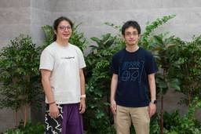
10Xで活躍中のid:syou6162さんを訪問 | はてな卒業生訪問企画 [#18] 23 Hatena Developer Blog
Hatena Developer Blog
連載企画「卒業生訪問インタビュー」 第18回のゲストは、小売チェーン向けECプラットフォーム「Stailer」を提供する株式会社10Xでデータエンジニアとして活躍しているid:syou6162:さんこと、吉田康久さんです。はてなEMのid:onkがお話を伺いました。
5日前
React Router v7でLLMのストリーミングレスポンスを実装する 23 カミナシ エンジニアブログ
こんにちは。カミナシで「カミナシ 設備保全」サービスの開発を行っている澤木です。 今回はReact Router v7でReadableStreamを利用したデータの逐次表示を実装する方法について紹介します。 現在私たちのチームではLLMを使った機能開発を行っているのですが、LLMは生成処理に時間がかかるため全てのデータ生成を待ってから表示するとユーザー体験が悪化してしまいます。 そのためストリーミングで逐次データを受け取り、生成された部分から少しずつ表示していくという実装が一般的かと思います。 React Router v7にもストリーミング機能は提供されているのですが、これはあくまで遅延読…
5日前

AI巻き込み型コードレビューのススメ 34 Nealle Developer's Blog
ニーリーアドベントカレンダー 8日目を担当する増田(ますた)です。 文章力に乏しいため、AIに助けてもらいながらこの記事を書きました。 去年に続きススメシリーズです。 コードレビューで「こうした方がいい」と指摘したのに、意図が伝わらず違う方向に修正されてしまった——皆さんそんな経験はありませんか？ 本記事では、今年私の中でハマっている手法である「AI巻き込み型レビュー」を通じてこの問題を解決するアプローチを紹介します。 コードレビューにおける「伝える難しさ」 コードレビューは単なるコードのチェックではありません。「なぜこう書くべきか」という意図や背景を、レビュイーに正確に伝える必要があります。…
6日前

【re:Invent】チョークトーク参加レポ & 英語に自信が無い方への参加のススメ 20 Nealle Developer's Blog
この記事は ニーリーアドベントカレンダー 9日目です :🎉 お疲れ様です。re:Invent 2025へ参加した大木( @2357gi ) です。 今回はre:Invent 2025で行われている Chalk Talkに参加し、だいぶ衝撃的&お勧めしたいと感じたのでレポと攻略法をまとめます💪 そもそも 今年の目玉が発表されるキーノートから実際に手を動かすワークショップ、グループ対抗でスコアを競うGameDayなど、re:Inventには様々なタイプのセッションが存在します。 その中でも「チョークトーク（Chalk Talk)」という”対話型”のセッションがあるのですが、これはスピーカーがただ講…
5日前
LLMで日本企業の「来期の利益は増える？」をアウトオブサンプル検証 20 Insight Edge Tech Blog
こんにちは！データサイエンティストの白井です。 今日は、私が第35回人工知能学会金融情報学研究会(SIG-FIN)で発表した LLMs による利益予測の分析とアウトオブサンプル評価 について紹介します。 本記事は、Insight Edge Advent Calendar 2025 の9日目の記事となっております。 またAdvent Calendarの7日目には、35回SIG-FINの包括的なレポート記事もありますので、ご興味があれば覗いてみてください！ はじめに EDINETについて 有価証券報告書の紹介 データについて EDINET-BENCHについて EDINET-BENCHでの予測方法 …
5日前

『Tidy First?』の実践でコードレビュー完了までのリードタイムが短縮された話 4 Wantedly Engineer Blog
Wantedly Engineer Blog
はじめにこんにちは。ウォンテッドリーのバックエンドエンジニアの西野です。本記事では、開発チームの課題であったコード...
2日前

BigQueryのSQLいろいろ (5) NULL・その他の型 4
Wantedly Engineer Blog
BigQueryのSQLについて、ドキュメントを読んだり実験したりしながら挙動を解き明かしていこうと思います。第5...
2日前
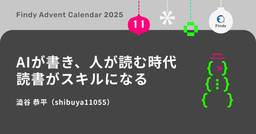
AIが書き、人が読む時代、読書がスキルになる 4 Findy Tech Blog
Findy Tech Blog
はじめに こんにちは！ファインディのTeam+開発部でエンジニアをしている澁谷（TENTEN11055）です。 この記事は、ファインディエンジニア Advent Calendar 2025の11日目の記事です。 今年11月、AWS が主催する AI-DLC Unicorn Gym に参加しました。 AWS主催 Unicorn Gym 最終日の成果プレゼンの様子 このプログラムの開発プロセスはAIと共に歩む仕様駆動開発。 部分的なAI活用から一歩進んだ開発体験を得ることができ、同時に「今後はより読解力が求められる」と感じました。 この記事では読書習慣がなぜスキルになるのか、自分の体験をもとに書い…
2日前
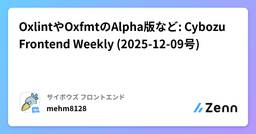
OxlintやOxfmtのAlpha版など: Cybozu Frontend Weekly (2025-12-09号) 4 サイボウズ フロントエンドのフィード
こんにちは！ サイボウズ株式会社 フロントエンドエンジニアの mehm8128 (@mehm8128) です。 はじめにサイボウズ社内では毎週火曜日に Frontend Weekly と題し「一週間の間にあったフロントエンドニュースを共有する会」を開催しています。今回は、2025/12/09 の Frontend Weekly で取り上げた記事や話題を紹介します。 取り上げた記事・話題 never が好きhttps://susisu.hatenablog.com/entry/2025/12/04/130842TypeScript のnever型の紹介記事です。条件分...
3日前
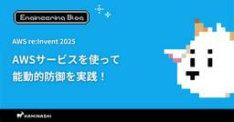
【AWS re:Invent 2025】AWSサービスを使って能動的防御を実践 29 カミナシ エンジニアブログ
はじめに カミナシの認証認可チームのmanaty（@manaty226）です。今年もラスベガスにて12月1日から12月5日まで開催されているre:Inventに参加しています。この記事では、最終日に参加した以下のワークショップセッションについて記載します。 Active defense strategies using AWS Al/ML services [REPEAT] (SEC401-R1) AIを使った能動的防御 サイバーセキュリティにおける能動的防御とは、攻撃を受ける前にその予兆を把握して対処することです。特に、本ワークショップではサイバーセキュリティ欺瞞（Cyber Securit…
6日前
生成AIとArduinoで作る姿勢矯正システム - 振動で教える猫背防止デバイス 28 Insight Edge Tech Blog
こんにちは、Insight Edgeの小林まさみつです。本記事は Insight Edge Advent Calendar 2025 の8日目の記事です。 最近は生成AIをソフトウェア領域に応用した開発をしていますが、今回は趣向を変えてハードウェアと組み合わせたシステムを作成してみたので紹介します。 目次 1. はじめに 1.1 なぜ作ったのか 1.2 完成システムの紹介 1.3 この記事で分かること 2. システム概要 2.1 全体構成図 2.2 使用技術スタック 2.3 動作の流れ 3. ハードウェア編：振動モーター制御回路 3.1 必要な部品リスト 3.2 回路図と配線 3.3 動作確認…
6日前
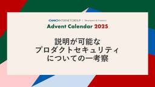
説明が可能なプロダクトセキュリティについての一考察 7 GMO Developers
この記事では、プロダクトを提供する組織が向き合うべき「セキュリティとは何か」について、“なぜやるのか”という観点をもとに、説明可能なプロダクトセキュリティのあり方について一考察を書いていきます。 また、主な想定読者は「一 […]
4日前
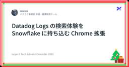
Datadog Logs の検索体験を Snowflake に持ち込む Chrome 拡張 23 LayerX エンジニアブログ
LayerX エンジニアブログ
初めまして、今年 9 月にバクラク事業部に入社した rerorero です。 この記事は LayerX Tech Advent Calendar 2025 7 日目の記事です。 もう今年も残り一月弱ですね。 自分にとっては今年も本当にあっという間でした。 年末になるといつも「ジャネの法則」を思い出します。 人は年齢に反比例して時間を早く感じるという概念で、例えば 30 歳の人にとっては 10 歳の 3 倍、50 歳の人には 5 倍の速さに感じるというものです。 時間は平等で一定だと思っていたけれど、歳をとるにつれ短くなる感覚に焦りを覚えます。 今日はそんな貴重な業務での時間をちょっと節約する …
7日前

チンパンジーでもわかるGit/Github【初心者向け】 6 SIOS Tech Lab
こんにちは、チンパンジー配属の永田です。 みなさんは「自分って、チンパンジーなんだ」と思ったことがありますか？ 僕はあります。 新卒1年目のころ、「サルでもわかるgit」を読みました。 わかりませんでした。 ...チンパンジーでもわかるGit/Github【初心者向け】 first appeared on SIOS Tech Lab.
3日前
ヤドンでやぁ〜んと学ぶLLMのロングコンテキストを支える技術YaRN 6 ABEJA Tech Blog
ABEJA Tech Blog
やぁ〜ん こんにちは、データサイエンティストをしている服部です。 ABEJAアドベントカレンダー2025の10日目の記事です。 LLMといえばロングコンテキスト大事ですよね（唐突） そんなLLMのロングコンテキストを支える重要技術である「YaRN」を紹介したいと思います。 https://arxiv.org/abs/2309.00071 脳内再生されるあれ 実際になんと読むのが正解なのか知りませんが、私の頭の中ではこれしか流れません。 「やぁ〜ん」 www.youtube.com どないやねん ヤドン ということで、「やぁ〜ん」っとヤドンを題材にしながらヤドンでも分かるようにYaRNを紹介した…
4日前
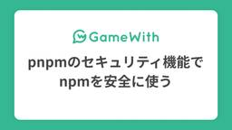
pnpmのセキュリティ機能でnpmを安全に使う #GameWith #TechWith 14 GameWith Developer Blog
GameWith Developer Blog
はじめに こんにちは。サービス開発部の木村です。 この記事は GameWith アドベントカレンダー2025 9日目の記事です。 2025年は「Shai-Hulud」と呼ばれる大規模なサプライチェーン攻撃が発生し、人気OSSでも採用されている有名なnpmパッケージが乗っ取られる事件が発生しました。この出来事は、多くのエンジニアがnpmエコシステムの安全性やパッケージ管理のあり方を改めて考えるきっかけにもなったと感じています。 こうしたセキュリティリスクが高まる中、Node.jsのパッケージマネージャーであるpnpmは今年にリリースされたv10以降セキュリティ機能も積極的に強化しており、これまで…
5日前

xUTPによるテストダブルの定義とその図解 22 NTT docomo Business Engineers' Blog
この記事は、NTT docomo Business Advent Calendar 2025 8日目の記事です。 自動テストの文脈で、モックやスタブという用語を目にすることがあるかと思います。この用語は、人やテストフレームワークごとに異なった意味で使われることがあり、しばしば混乱を招いています。そして、そのような指摘をした上で概念の整理を図ったものとしてGerard Meszarosの書籍『xUnit Test Patterns』（xUTP）1とウェブサイト2があります。 xUTPでは、テスト対象（SUT）の依存コンポーネント（DOC）を置き換えるものを総称して「テストダブル」と呼び、その目的…
5日前
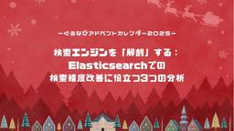
【アドベントカレンダー2025】検索エンジンを「解剖」する：Elasticsearchでの検索精度改善に役立つ3つの分析 22 ぐるなびをちょっと良くするエンジニアブログ
こんにちは！ 検索開発のグループ長をしている牧野です。 今期、レストラン検索ではフリーワード検索の精度改善を大きな目標にして取り組みました。 今回はその過程で得られたナレッジ、特に「検索結果の分析手法」についてシェアしたいと思います。
6日前
OCR × LLM。明細表を読み解く新しい一段 3 RAKUS Developers Blog | ラクス エンジニアブログ
RAKUS Developers Blog | ラクス エンジニアブログ
はじめに 請求書の明細表をOCRによって自動で読み取ることができると、経理業務自動化の実現に役立ちます。 ところが実際には、多様なフォーマットの存在や OCR の誤読が積み重なり、AIモデルとルールベース後処理だけでは思った以上に精度が出ない、という壁にぶつかることがあります。 AI モデルそのものの改修となると、学習データの追加やモデル更新など、時間もコストも必要になります。また、ルールベース後処理を増やし続けるのは、将来の保守を重くする心配がつきまといます。 そこで、「大規模言語モデル（LLM）を後処理に加えたら、より柔軟に・より構造的に・まるで人間が行うように誤りを補正できるのではないか…
2日前
引越し先の問題を解決するために真の意味でひとりハッカソンをする 3
ABEJA Tech Blog
この記事は、ABEJAアドベントカレンダー2025の11日目の記事です。 こんにちは。 株式会社ABEJAのシステム開発部でエンジニアをしている鈴木です。 他のメンバーががっつり技術に触れている中、今回はひたすらにバイブコーディングする話になります。 今年のアドベントカレンダーもバラエティに富んだラインナップになっているので他の記事もぜひご一読いただければと思います！ 今回は以下の目次でお届けいたします！ 新居が決まった！ 熊が街にやってくる！ バイブコーディングについて ここでタイトル回収 ここから本編 企画 運営 各モデルの成果物 Composer 1 Opus 4.5 GPT-5.1 C…
3日前
【アドベントカレンダー2025】オンラインイベントを盛り上げたリアクションツールをつくって、クローズするまでの話 13 ぐるなびをちょっと良くするエンジニアブログ
こんにちは！普段は ぐるなびウエディング の開発をしている滝口（@ytakiguche）です。 ぐるなび Advent Calendar 2025 の 9 日目を担当します！ この記事では、オンラインイベントを盛り上げるために社内で開発した「リアクションツール」が、どのような課題から生まれ、どのように使われ、そしてなぜクローズに至ったのかを振り返ります。
4日前
Chrome拡張機能を自動リロードするVite Pluginを自作してみた 18 iimon TECH BLOG
はじめに 本記事はiimon Advent Calendar 2025 8日目の記事となります。 SREチームに所属しています。hogeです。 普段はインフラまわりの業務が中心なのですが、時折プロダクト開発チームが進めているChrome拡張機能の開発を手伝うことがあります。 また、個人でも小さな拡張機能を作ることがあり、その中で開発体験をもっと良くしたいなと感じる場面が多くありました。 今回は、そんな思いからChrome拡張機能の自動リロード（ホットリロード）仕組みを自作してみたので、その内容を紹介します。 アドベントカレンダーに向けて作ったため、現時点では実プロジェクトにはまだ導入していませ…
6日前
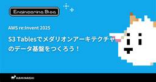
【AWS re:Invent 2025】S3 Tablesでメダリオンアーキテクチャのデータ基盤をつくろう！ 11 カミナシ エンジニアブログ
はじめに カミナシの認証認可チームのmanaty（@manaty226）です。今年もラスベガスにて12月1日から12月5日まで開催されているre:Inventに参加しています。この記事では、最終日に参加した以下のワークショップセッションについて記載します。 Modern batch analytics: Building advanced transactional datalakes with S3 Tables メダリオンアーキテクチャにもとづくS3 Tablesデータ基盤 本セッションでは、S3 Tablesを使ってメダリオンアーキテクチャと呼ばれる、データを3層のストレージで管理するデ…
5日前
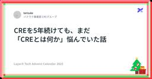
CREを5年続けても、まだ 「CREとは何か」悩んでいた話 16 LayerX エンジニアブログ
この記事は LayerX Tech Advent Calendar 2025 の8日目の記事です。 前日は、 rerorero さんの 「Datadog Logs の検索体験を Snowflake に持ち込む Chrome 拡張」でした。 こんにちは、バクラク事業部CREグループのtanisuke( @taaag51 )です。ストレイテナーというバンドを推し、愛し、人生を捧げている者です。 2025年8月にLayerXに入社し、1人目 CRE（Customer Reliability Engineering）として組織の立ち上げを担当しています。 前職から数えると、CRE歴5年目になります。(…
5日前
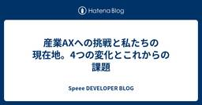
産業AXへの挑戦と私たちの現在地。4つの変化とこれからの課題 16 Speee DEVELOPER BLOG
こんにちは。Speee リフォームDX事業本部 開発責任者の佐藤です。 本記事は Speee Advent Calendar 8日目の記事となります。 前日の記事はこちら。 私たちは「DX Democracy」および「産業AX（AI Transformation）」を掲げ、リフォーム産業という巨大かつ複雑な領域の変革に挑んでいます。 前回の記事「リフォームDX開発の組織紹介〜ミッション編〜」では、そのビジョンと、私たちが解決しようとしている構造的な課題についてお話ししました。 今回は、そのビジョン実現に向けて始動した「10の挑戦」プロジェクトの進捗と、現場で起きている具体的な変化について、振り…
6日前
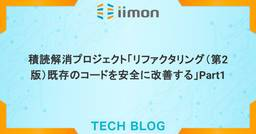
積読解消プロジェクト「リファクタリング（第2版）既存のコードを安全に改善する」Part1 16 iimon TECH BLOG
はじめに 個人的にリファクタリングについて思うこと リファクタリングの原則 リファクタリングの定義 リファクタリングをする理由 リファクタリングはプログラミングを速める より詳しくリファクタする理由を考える リファクタリングの問題点 リファクタリングを行うタイミングについて 不可思議な名前 重複したコード 長い関数 ループ コメント まとめ 本のリンク はじめに 株式会社ｉｉｍｏｎアドベントカレンダー7日目担当「たっくー」です！！！ 会社ではフロントエンドを主に担当しています。 いやー、あっという間に12月ですね〜 年末といえばすることは一つですよね！！ そう、大掃除！！ 大掃除をしていたら積…
7日前
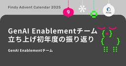
GenAI Enablementチーム立ち上げ初年度の振り返り 10 Findy Tech Blog
はじめに こんにちは、GenAI Enablementチームです。 この記事はファインディエンジニア #3 Advent Calendar 2025の9日目の記事です。 今年1月に「GenAI Enablementチーム」を立ち上げてから現在までの約1年間における活動を総括します。 チーム組成から今日に至るまで、どのような課題に直面し、それらをどう解決して成果に繋げてきたのか。その過程で得られた「理想と現実」のギャップや、具体的な成果・反省点について詳述します。 今後、自社でのGenAI活用推進を担う方々にとって、実践的なヒントとなれば幸いです。 今月から、沢山のアドベントカレンダー記事が執筆…
5日前

音声入力 + Cursor で設計を効率化する方法。思考プロセスの記録を利用し、タイピングほぼなしで作業時間を短縮する 15 Tabelog Tech Blog
この記事は 食べログアドベントカレンダー2025 の9日目の記事です🎅🎄 1. はじめに こんにちは。飲食店プロダクト開発部アワード予約チームに所属している @aaknsk です。 カカクコムでは、AIモデルを搭載したコードエディタ「Cursor」を全社的に導入しています。 この記事では、音声入力とCursorを組み合わせることで、設計を効率化する方法について紹介します。 音声入力で思考プロセスそのものを記録し、タイピングをほとんど行わずに設計と設計資料を作成する方法について実際のプロンプト例も交えながら、すぐに実践できるようお伝えしていきます。 2. 音声入力を使おうと思ったきっかけ 資料作…
5日前
🚀 AutomatorとpngquantでPNG圧縮を自動化！フォルダアクション設定ガイド 15 asken テックブログ
はじめに こんにちは。Androidエンジニアの永井です。 この記事は、株式会社asken (あすけん) Advent Calendar 2025の12/9の記事です。 今回は、画像圧縮テクニックについてご紹介します。 ウェブサイト制作やアプリ開発などでPNG画像を扱う機会は多いですよね。その都度、圧縮ツールを使うのは面倒...。 そこで今回は、Macの標準機能であるAutomator（オートメーター）と、高機能なPNG圧縮ツールpngquantを連携させ、「設定したフォルダにPNG画像を保存するだけで自動で圧縮される」という自動化設定を、フォルダアクションを使って実現する方法を解説します！ …
5日前
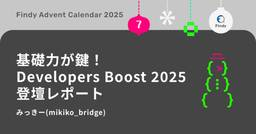
基礎力が鍵！ Developers Boost 2025登壇レポート 15 Findy Tech Blog
こんにちは、ファインディのみっきー@mikiko_bridgeです。 12月6日（土）に池袋で開催されたDevelopers Boost 2025の「Hello, new world! ～技術とキャリアを次のステージへ～」というテーマのLT枠で登壇しました。 翔泳社さんのイベントで登壇するのは2回目です。昨年、Women Developers Summit 2024でLTをさせていただき、再び登壇の機会をいただけて本当に嬉しいです！ 本記事では、私のLTの内容と、登壇準備を通じて得た気づきについてお伝えします。 ファインディと生成AI ジュニアエンジニアはどう生きるか？ 伸び悩むわたし 5ヶ月…
7日前
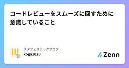
コードレビューをスムーズに回すために意識していること 13 スタフェステックブログのフィード
!この記事はスターフェスティバルAdvent Calendar 2025の8日目の記事です。 はじめに早いもので12月ですね🎄 皆さんはどんな1年だったでしょうか？今年のトピックの1つはやはりAI agentによる開発の変化でしょう。コード生成は当たり前となり、「最近手でコードを書いてないな？」というレベルまで浸透してきています。大量のコードを短時間で生成できるようになった一方で、コードレビューの負担が増えがちだなと感じています。この記事では、コードレビューをスムーズに回すために私が意識していることを整理してみます。 前提：チームの認識を揃えるコードレビューをスムーズ...
6日前

Claude Code GitHub Actions で Dependabot が作成した PR を自動マージ 8 CyberAgent Developers Blog | サイバーエージェント デベロッパーズブログ
CyberAgent Developers Blog | サイバーエージェント デベロッパーズブログ
はじめに この記事は CyberAgent Developers Advent Calendar 2 ...
5日前
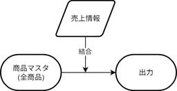
システム開発からデータ分析へ。やってみて気づいた技術選定と実装のポイント 3 フューチャー技術ブログ
<h1 id="はじめに"><a href="#はじめに" class="headerlink"
3日前

FlutterのState Restorationの基本と応用 3 ANDPAD Tech Blog
なぜState Restorationの話？ 正直に言うと、Flutter の State Restoration は今年もっとも苦しめられたテーマでした。 「面倒」という言葉で片付けられるものではなく、仕組みを理解していないと破綻する設計領域です。 開発現場でも「なんとなく使っている」「勝手に復元される仕組み」と誤解されやすく、 正しい設計思想・保存のタイミング・責務の境界を理解している人は驚くほど少ないと感じました。 だからこそ、この知識は社内に閉じるべきではない、と考えています。 今年向き合ったすべての試行錯誤と理解を、Advent Calendar の形で公開し、 「State Res…
4日前
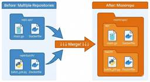
gitの履歴を維持したまま、リポジトリを1つに統合する 3 エムスリーテックブログ
こんにちは。AI・機械学習チームの苅野です。 このブログはエムスリー Advent Calendar 2025 10 日目の記事です。API と Batch でリポジトリが分かれているプロダクトを 1 つのリポジトリに統合しようと考えて検証を行い、 「既存リポジトリで git mv してから merge --allow-unrelated-histories する」 方法を採用することに決めました。 git filter-repo など他の手法も検証しましたが、この方法だと 「Commit ID を変えずに（過去の PR リンク等を維持したまま）、--follow オプションでファイル移動前の…
4日前

実践！ Azure Databricks のバックエンド・データ通信を閉域化する【Bicep (+α)】 3 NTT docomo Business Engineers' Blog
この記事は、NTT docomo Business Advent Calendar 2025 10日目の記事です。 Microsoft の IaC 言語である Bicep (+ Azure CLI/Databricks CLI) を使って、Azure Databricks ワークスペースをデプロイし、そのバックエンド通信や Azure データサービスへの通信を閉域化する方法を紹介します。 また、その環境を使ったデータ収集の一例として、Azure Event Hubs を使ったプライベートなデータストリーミングを試します。 はじめに なぜこの構成を記事にするのか 今回の構成と前提 前提 Bice…
4日前
第35回 人工知能学会 金融情報学研究会（SIG-FIN） 参加レポート 11 Insight Edge Tech Blog
はじめまして！Data Scientistの白井と市川です。 今回は、先日第35回 人工知能学会 金融情報学研究会（SIG-FIN） に行ってきましたので、そのレポートをさせて頂ければと思います。 イベントの概要 発表の概要 人工市場(4件) (01) 人工市場を用いた取引単位の違いが裁定取引に与える影響の分析 (03) 人工市場を用いた決済期間が異なる市場間での裁定取引が各市場に与える影響の分析 (04) 人工市場を用いたサーキットブレーカーの性能調査 投資戦略(4件) (05) 米国経済指標の集団的変動と産業セクター間の関係性の分析 (06) 多資産ネットワーク分析が示す暗号資産の独立性と…
7日前
WEARアプリにおけるLiquid Glass対応への第一歩 6 ZOZO TECH BLOG
ZOZO TECH BLOG
はじめに こんにちは、WEARフロントエンド部iOSブロックの西山です。普段はWEAR iOSチームのマネジメント兼アプリの開発を担当しています。今年のWWDC25で、新しいソフトウェアデザインのLiquid Glassが発表されました。透明感のあるUIと流動的なアニメーションが特徴的なこの新デザインは、WEARアプリに大きな影響を与えました。鋭意進行中の取り組みとして、本記事では、Liquid Glass対応を計画的に進めるための取り組みを紹介します。
5日前
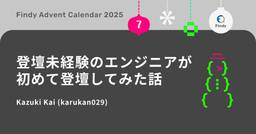
登壇未経験のエンジニアが初めて登壇してみた話 8 Findy Tech Blog
こんにちは！ファインディのTeam+開発部の甲斐（@karukan013L23）です。この記事は 🎄ファインディエンジニア #1 Advent Calendar 2025 7日目の投稿です。 adventar.org 去年まで1度も登壇したことがなかったのですが、今年は次の3つのイベントに登壇しました。 2025/6/25: Mita.ts #6 2025/8/20: すごくすごい。フロントエンドミートアップ 〜複雑GUI・アーキテクチャ設計を語ろう 〜 2025/11/23: TSKaigi Hokuriku 2025 今回は、登壇経験のなかった私が登壇に挑戦したきっかけや、各イベントの登壇…
7日前

アンドパッド カンファレンススポンサーの歴史と教訓 ～巨人の肩の上に立つ 5
ANDPAD Tech Blog
こんにちは id:sezemi です。 この記事は ANDPAD Advent Calendar 2025 の 9 日目の記事です。 前回の記事でも触れましたが、 フットボールネーション 20 巻 がいよいよ 12/26 に発売です。 ちなみに、ふりかえりは 2 周目に入っています。 さて、先月 11/18 に私も所属している DevRel Guild という技術広報コミュニティでカンファレンススポンサーをテーマとした Meetup 、 DevRel Guild Meetup #5 が開催されました。 そこでプロポーザルを出したところ、残念無念、不採択だったので、テックブログでお披露目します。…
5日前
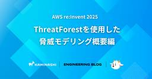
【AWS re:Invent 2025】ThreatForestを使用した脅威モデリング概要編 7 カミナシ エンジニアブログ
こんにちはセキュリティエンジニアリングの西川（@nishikawaakira）です。今回は ThreatForest を使用した脅威モデリングについてセッションに参加してきたので概要編と実践編に分けて紹介したいと思います。 脅威モデリングの4つの質問のフレームワーク ThreatForest の話に入る前にまずは脅威モデリングのお話から。脅威モデリングには4つの質問のフレームワークがあるらしいです。私はそんな基礎的なことすら知らなかったのですが、このフレームワークは古くから脅威モデリングのプロセスを進める際のメンタルモデルとして使われてきたそうです。 要点は下記の 4 つの質問です。 何を作っ…
5日前

ChatGPT と Copilot、どちらが優秀か勝負させてみた 7 IIJ Engineers Blog
【IIJ 2025 TECHアドベントカレンダー 12/7の記事です】 ChatGPT と Copilot、どちらも大変優秀で心強い味方です。 ふと、会社からの帰り道に「ChatGPT と Copil...
6日前
Visual Studio Code から PostgreSQL を簡単に操作する 7 Alternative Architecture DOJO
Alternative Architecture DOJO
こんにちは！オルターブース清島です。 2025年のオルターブース アドベントカレンダー7日目の記事となります。 6日目はChaseさんによる Microsoft 認定資格取得の体験記でした。 adventar.org 11月には Microsoft Ignite の開催に合わせて Microsoft 製品の様々な発表がありましたが、この記事ではその中から「Visual Studio Code の PostgreSQL 拡張機能」について取り上げます。 Visual Studio Code PostgreSQL 拡張機能の概要 公式ドキュメント に詳しく記載されていますが、概要としては次のように…
7日前
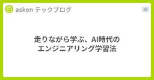
走りながら学ぶ、AI時代のエンジニアリング学習法 4 asken テックブログ
はじめに この記事は、株式会社asken (あすけん) Advent Calendar 2025の12/10の記事です。 こんにちは。askenデータサイエンティストの渡辺です。 私は今までデータ分析（アナリスト・サイエンティスト）の業務を中心として働いていましたが、asken入社以降はデータ・AIの活用を推し進めていくために、初めてWebアプリ開発やインフラ構築などの本格的なエンジニアリングに挑戦することになりました。 ソフトウェアエンジニアとしての「基礎がない」状態から、Claude CodeやCursorを活用してPoC開発からスタートしていきましたが、「AI頼みで力がつくのか？」という…
4日前

Bundler 4.0.0とRubyGems 4.0.0にアップグレードするときの注意点 5 TechRacho
TechRacho
Bundler 4とRubyGems 4は、ユーザービリティ・メンテナンス性・セキュリティを改善するために、非互換な変更を含むさまざまな変更が行われているので、見逃さないために以下を読んでまとめてみました。 参考: Upgrading to RubyGems/Bundler 4 - RubyGems Blog 上の公式ドキュメントに記載されているのは4.0.0の変更だけとは限らず、以前の変更に関連する記述も含まれている点にご注意ください。 利便性のため、上のドキュメントの項目順を重要度の高そうな順に再編成し、可能な限り関連プルリク/コミットも記載しました。 追記 BundlerとRubyGemsのメンテナーである […]The post Bundler 4.0.0とRubyGems 4.0.0にアップグレードするときの注意点 first appeared on TechRacho.
5日前
リモートワークをする上で大事なこと 5 コラボスタイル Developersのフィード
この記事はコラボスタイルAdvent Calendar 2025 12月8日の記事です。コラボスタイル 開発部のDoです。昨年はこのアドベントカレンダーを読んでいる立場でした。今年はこうやって参加できることが非常に嬉しいです。今回のコラボスタイル Advent Calendarのテーマは「コラボ」ということで、コラボスタイルに入社してから初めてのフルリモート環境、チームのメンバーと協働（コラボ）して仕事をするために大事だと感じた三つを紹介させていただきます。 リモートワークで意識をしたい3つのこと 1. アウトプットをする例えば「わからない」とアウトプットすることはすごく...
6日前

Gitの代わりにJujutsuを使い始めて1ヶ月 3 STORES Product Blog
STORES Product Blog
この記事はSTORES Advent Calendar 2025の9日目の記事です。 こんにちは。Webエンジニアをしているotariidaeです。呪術廻戦は未履修です。 個人的にgitコマンドの代わりにJujutsu（jjコマンド）を使い始めてから1ヶ月ほどが経ちました。 この記事では実際に業務で毎日使ってみてどうだったかをふりかえってみようと思います。 Jujutsuとは Jujutsuは比較的新しいバージョン管理システムです。Gitをバックエンドとして利用できるため、既存のGitリポジトリで自分だけしれっと使い始められます。 # 既存リポジトリで使い始めるにはこのコマンド打つだけ jj …
4日前

AIよりも手戻りに効く、たったひとつの冴えたやりかた 3 freee Developers Hub
こんにちは。freeeの課金基盤チームでQAエンジニアをしているkairiです。 この記事は freee QA Advent Calendar2025 の9日目です。 ここ数年AIの登場によって様々なことが本当に便利になりました。私自身2年以上プライベートでChatGPTに課金しているヘビーユーザーですし、業務においても日常的にGeminiやNotebookLM、askDevin、Roo CodeといったAIツールをフル活用しています。 いま、どこの企業でも開発やテストの現場でAIによる効率化が急速に進んでいることでしょう。一方で、AIが出した「正しそうな答え」をそのまま採用して、後から「あれ…
5日前

Iceberg × dbt × BigQuery × Snowflakeでつくる、マルチDWHパイプライン 3 ENGINEERING BLOG ドコモ開発者ブログ
ENGINEERING BLOG ドコモ開発者ブログ
Apache Icebergを用いて、SnowflakeとBigQueryを横断するマルチDWHのデータパイプラインを実現しました。開発・運用の効率性を高くするためdbtで実装したが、その中で気を付けなければいけない点が多くありました。想定する読者Icebergを用いたパイプラインをdbtで実現したいデータエンジニアの方マルチDWHでのデータ基盤を実現しようとしている方
5日前
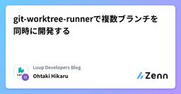
git-worktree-runnerで複数ブランチを同時に開発する 4 Luup Developers Blogのフィード
本記事は、Luup Advent Calendar 2025の8日目の記事になります。こんにちは、Operation開発チームでバックエンドを担当している大瀧です。今回は、複数ブランチでの並行開発を効率化するCLIツール「git-worktree-runner（gtr）」についてご紹介します。ローカルでのコードレビューや、機能開発の合間にhotfixの対応をしたり...。日々の開発で頻繁にブランチを切り替える場面は多いと思います。その度にgit stashで作業を退避して、後でgit stash popで戻して...という作業に消耗していませんか？あるいはgit worktree...
5日前

ノーコードAIアプリ開発ツール『Dify』を使って、LLMにDBのデータ分析をさせてみた！ 4
IIJ Engineers Blog
【IIJ 2025 TECHアドベントカレンダー 12/8の記事です】 始めに こんにちは。九州支社営業推進課に所属する白川です。 普段はプリセールスエンジニアとして、IIJサービスや生成AI活用の提...
6日前
AWS / Google Cloud / SaaS の横断的な権限管理基盤を作り直している話 4 Sansan Tech Blog
Sansan Tech Blog
この記事は、Sansan Advent Calendar 2025 、7日目の記事です。 はじめに こんにちは、技術本部 コーポレートシステム部 Corporate Architectureグループ所属の小松です。 最初に所属先のコーポレートシステム部門について簡単に紹介させてください。 コーポレートシステム部は、情報システム部門（いわゆる情シス）にあたります。部のミッションとして「EXをシンプルにする」ということを掲げています。EXとは Employee Experience（従業員体験）のことです。 本ブログでは、一部ではありますがEX向上の寄与に関連する AWS / Google Clo…
7日前

SVGファイルは本当に安全なのか？SVGの中にある危険な仕組みと対策 4 エニグモ開発者ブログ
エニグモ開発者ブログ
こんにちは！Webアプリケーションエンジニアのレミーです！ この記事はEnigmo Advent Calendar 2025の7日目の記事です。 最近「Operation Hanoi Thief」という事件を読みました。 これは、ベトナムのITエンジニアや採用担当者を狙ったサイバー攻撃についての内容で、怪しいファイルを送りつけて情報を盗む手口が紹介されていました。 その中で、一見ただの画像に見えるファイルでも、実は中に攻撃的なコードが入っている恐れがある、という点が気になったので、SVGの中にある危険な仕組みを紹介します。 多くの人にとって、SVGファイルは「軽くて、拡大しても劣化しない便利な…
7日前

Red FlatBuffers：IO::Bufferを使ったpure Ruby FlatBuffers処理系 3 ククログ
ククログ
これはRuby/Rails Advent Calendar 2025の9日目の記事です。Red Data Toolsをやっている須藤です。pure RubyでApache Arrowの実装を作ることにしたのですが、Apache Arrowの実装に必要なFlatBuffersがRubyをサポートしていなかったのでそこから作っています。FlatBuffersはパースなしでデータにアクセスできるシリアライゼーションフォーマットです。たとえば、"[10, "hello", true]"というようにJSONにシリアライズした場合は、文字列の"10"をパースして数値の10にしないとデータを使うことはできませんが、FlatBuffersではそんなことをしなくてもデータを使うことができるということです。FlatBuffersを使う場合は、まずスキーマを定義して、そのスキーマから各種プログラミング言語のソースコードを生成します。その生成されたソースコードを使うと、対象のスキーマ向けにシリアライズされたFlatBuffersデータにアクセスできます。ソースコードを生成するプログラムはC++で実装されている
5日前

Devin の Playbooks を活用したリポジトリメンテナンスの効率化 3 Wantedly Engineer Blog
こんにちは。ウォンテッドリーでデータサイエンティストをしている林 (@python_walker)です。この記事で...
5日前

Microsoft Graph API の認証方式を整理｜SaaS開発で検討した3つのアプローチ 3 DRESS CODE TECH BLOGのフィード
はじめにDress Code Advent Calendar 2025の8日目の記事です。こんにちは！最近、ビジネスネームを持った方が続々入社されて、自分も何か欲しいなぁと思う今日この頃です。この記事では、 Microsoft Graph API を活用した新機能を実装する際に調査・検討した3つの認証方式について解説します。Microsoft 365 / Microsoft Entra ID と連携する機能を開発する際、「どの認証方式を選べばいいんだろう？」と悩んだ経験はありませんか？実は認証方式によって、実装の複雑さ、セキュリティ、運用コスト、スケーラビリティが大きく変...
6日前
ROS2を使ってシミュレーション環境にてロボットアームをVLAで動かす (on Mac) 3 ABEJA Tech Blog
こちらはABEJA アドベントカレンダー 2025の8日目の記事です！ ABEJAでデータサイエンティストをしている岩城です。 最近はロボティクス関連のキャッチアップを行っています。 ロボットをやるにあたってROS2は避けては通れぬということで、最近ROS2初心者に入門しました。 今回は、ROS2を使ってロボットをVLAで動かす方法について、自身のキャッチアップも兼ねて書いていこうと思います。 シミュレーション環境で実施したのですが、筆者が手軽に動かせるPCはMacのみだったため、さまざまな制約と戦いながらの検証になりました。 この記事は、気軽にMacを使ってシミュレーション環境上でROS2 …
6日前
Rails アプリケーションへの型導入検討 3 エムスリーテックブログ
この記事はエムスリー Advent Calendar 2025 5日目の記事です。 エムスリーエンジニアリングG コンシューマーチームの松原です。 Rails アプリケーション開発で型が欲しいと思ったことありますか？ 正直なところ、筆者はそれほど必要ないと考えていました。日々開発・運用している Rails アプリケーションの中には10年選手のものもあり、コードベースの勘所もほぼ把握できている状態だったためです。 しかし、ここ最近は TypeScript で開発されているプロジェクトに触れて型のメリットを実感し、型があった方が嬉しいことの方が多いかもしれないと感じています。 ここ半年ほどを振り返…
6日前

Unity URPで実装するWeighted OIT - 透明オブジェクト描画の順序依存問題を解決する 3 KAYAC Engineers' Blog
本記事は 面白法人グループ Advent Calendar 2025 の8日目の記事です。 1. 概要 こんにちは！カヤック技術部の高石です。 本記事では、Weighted Order Independent Transparency（以下 Weighted OIT）というレンダリング技術をUnity上で実装し、多数の透明オブジェクトをより正確に描画する方法を紹介します。以下に、最終的なWeighted OITと、シンプルな AlphaBlend の描画結果を示します。見た目は地味に見えるかもしれませんが、実装すると微妙な色のフェード感が正しい前後関係の表現に寄与していることが分かります。 W…
6日前
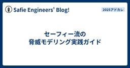
セーフィー流の脅威モデリング実践ガイド 3 Safie Engineers' Blog!
Safie Engineers' Blog!
セーフィー株式会社のセキュリティ担当者が解説する、現場で本当に機能する「脅威モデリング」の実践知。 脅威モデリングを単なる「分析手法」ではなく、開発者とセキュリティ担当をつなぐ「コミュニケーションツール」と再定義し、教科書通りの厳密さよりも「対話」を優先するセーフィー流のアプローチ（型）を紹介しています。
6日前

バイブコーディング開発のプロンプトはどこまで雑でも大丈夫なのか？ 3 freee Developers Hub
AIエージェントを駆使してアルバムアプリを開発！AI時代におけるエンジニアの役割と、初心者が直面する課題、求められるスキルを徹底考察。
6日前
フロントエンドエンジニアがEffect-TSの導入を検討してみた 3 エニグモ開発者ブログ
こんにちは！フロントエンドエンジニアの張です！ この記事はEnigmo Advent Calendar 2025の8日目の記事です。 「型安全」、「堅牢性」、「開発体験」、どれもエンジニアでしたら、近年よく聞くキーワードだと思います。特にウェブ開発、フロントエンド開発界隈では、それらを改善するためにTypeScriptを導入・採用するチームが増える一方です。 でも、「それでは足りない、もっと堅牢的、かつ保守しやすいTypeScriptを書きたい！」だと主張するコミュニティが実は存在していて、彼らがたどり着いた解決策は今回私が導入を検討したEffect TSです。 私の調査を説明する前に、記事を…
6日前

テンソル次元の整合性を静的検査するmypyプラグインを実装しようとした話 3 NTT docomo Business Engineers' Blog
この記事は、NTT docomo Business Advent Calendar 2025 7日目の記事です。 こんにちは。イノベーションセンターの加藤です。普段はコンピュータビジョンの技術開発やAI/機械学習（ML）システムの検証に取り組んでいます。 ディープラーニングの実装をしているときに、変数のshapeを管理するのはなかなか大変です。いつのまにか次元が増えていたり、想定外のshapeがやってきたりして実行時に落ちてしまった！というのは日常茶飯事だと思います。 こういった問題に対して静的解析で何とかできないかと試行錯誤した結果を共有します。 mypyプラグインを使うモチベーション my…
6日前

大LLM時代に論文を読む/まとめるならカスタムGPTで 3 株式会社ZOZOのフィード
!これは ZOZO Advent Calendar 2025 シリーズ6の7日目の記事です。今年はなんとシリーズ12まであるそうです。ぜひ他の記事もご覧ください！日々の業務で追われる中、最近では効率的かつ効果的に論文を読むためにLLMを活用しています。本記事では、これまでの経験で培ってきたノウハウとカスタムGPTをあわせた論文読みテクニックをご紹介します。 プロローグAdvent Calendarの時期がやってきましたね。Advent Calendarといえば、私がまだ大学院生だったころのお話を思い出します。https://www.slideshare.net/slides...
7日前

AWS Step FunctionsをAWS CDKとAWS Toolkit for Visual Studio Codeで開発する 3 JMDC TECH BLOG
JMDC TECH BLOG
こんにちは、医療機関支援事業本部の森田です。 今年、JMDCではアドベントカレンダーに参加しています。 qiita.com 本記事は、JMDC Advent Calendar 2025 の 7日目の記事です。 目次 はじめに 準備 ASLを軸にAWS ToolkitとCDK、AIが紐付く AWS Toolkit によるビジュアライズ JSONata によるデータ変換で Lambda を削減 AIとのペアプログラミング 不満点 まとめ はじめに ワークフローを構築する Step Functionsですが、開発を行うにあたりさまざまな理由でとっつきにくさを感じることがあります。 マネジメントコンソ…
7日前